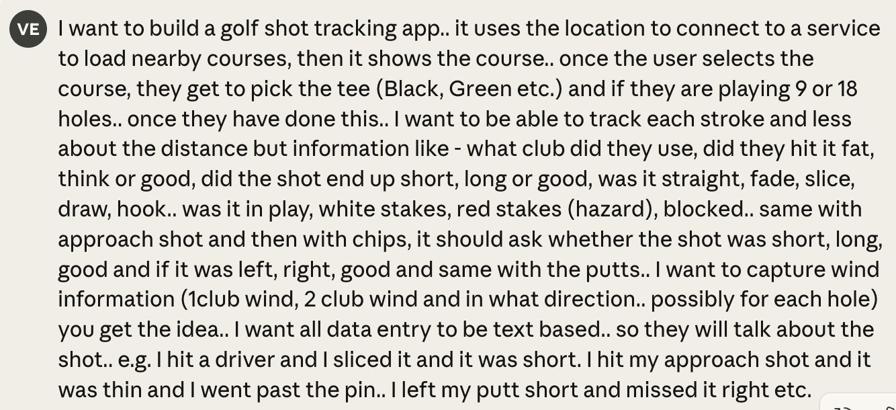
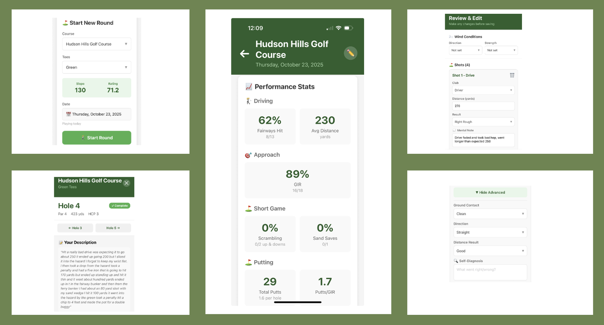

What I Learned Building My First Mobile App (And Why It Made Me a Worse Golfer)

My average golf score increased by 5 shots last week. Not because I was playing worse—because I was tracking every shot. Let me back up.
I'm an avid golfer, a data geek, and a tinkerer. I'm always trying to get better at golf, and for the longest time I've wondered what insights I'd get if I could capture all the gory details about every shot I hit on the course: Did I hit it thin or fat? Was the lie uphill or downhill? Was there helping or hurting wind? Do I leave my putts short? Why do I miss my chips? Did I finish on my toes? Did I get enough shoulder turn?
There are apps that capture some data, but nothing to this level of detail. And while you can go to an indoor driving range and get tons of data, it's not the same as being out on the course.
Being all-in on GenAI, I decided to build a mobile app that would help me capture all this data. The key difference: I would provide all my input as text, and AI would parse and extract the relevant information into a structured database.
I should caveat this by saying I have never built a mobile app. My son and I tried our hand at it 9 months ago using Bubble.io, but we gave up. I needed to be a designer to build something pretty, and that was something I was always going to struggle with.
Could Claude Really Help Me Build This?
Over the weekend, I sat down with Claude and asked if this is something it could help me with. I gave it a description of what I wanted to build -

I then asked it - How confident are you that we can build this? and it was honest -
The Build
The process was fascinating and full of surprises. I had never heard of Expo Go before, but Claude walked me through setting up every component:
The moment that surprised me most was when I first deployed to my phone and saw my own app icon sitting there next to Instagram and Gmail. It felt like magic something I built was now real software living on my device (too bad I might not use this ever again, but I am getting ahead of myself).
By Monday, I had a v1 of my mobile app working. I had my course hardcoded, and the flow was simple: select the course and date, start a new round, then after each shot describe what happened - what club I used, how I hit it, where it went, how far it traveled, what the lie was like, how the wind affected it. AI would parse it all and generate structured output from my description.

Iteration
I quickly realized that doing this for every shot was taking too much time. In the first version, I had to type everything out. So my next iteration only captured input at the end of each hole. Then I added stats and analytics. In the last iteration, I replaced text input with voice capture. You just talk into your phone, it transcribes your recording, and AI parses it.
It's amazing how quickly I was able to develop this and add new features.
But here's where things got interesting. Over the week that I tested this out, I played much worse than when I wasn't tracking my shots. This reminded me of Schrödinger's Cat: The act of observation affects the outcome.
Golf is a hard sport that requires intense focus and concentration. Thinking about every shot and recording my thoughts was disrupting my flow and affecting my performance.
This insight hit close to home. In my work at Gong, customers would ask for real-time transcription during calls, and we would push back. We knew that if a rep was reading the transcription in real time, they weren't paying attention to the customer. It would take them out of the flow of the conversation.
Ideally, data capture should happen as part of the activity, not independent of it. When data capture requires you to step outside the activity itself, it affects the quality of that activity.
1. I could do this. I now know how to build a mobile app and deploy it to the App Store. It's all magic until you do something for the first time. Then you realize that with a great teacher (GenAI), you can do way more than you give yourself credit for.
2. Data entry as we know it is going to change. No more filling out forms field by field. I verbalized my thoughts, AI parsed them, filled out the fields, and stored everything in a database. No wonder we're seeing so many use cases of calls being transcribed, structured data extracted, and CRMs automatically updated.
3. I validated a business idea by myself in 4 days. When people talk about one-person companies, I can see how we need fewer roles. I was the developer, product manager, SME, tester, and end user. All at once. The future will require people to play multiple roles in their jobs.
4. What is a developer? I built a mobile app, but I don't understand code, Python, TypeScript, or Git. AI handles all of that for me.
I used to think being a developer meant writing code. Now I think it means understanding what you want to build and knowing how to communicate that effectively to the tools. Whether those tools are frameworks, libraries, or AI. The barrier isn't technical knowledge anymore; it's clarity of thought and the persistence to iterate.
The skills that mattered most weren't coding skills. They were product thinking, problem decomposition, and the willingness to troubleshoot when things broke. Maybe that's what a developer has always been, and we've just been gatekeeping it with syntax.